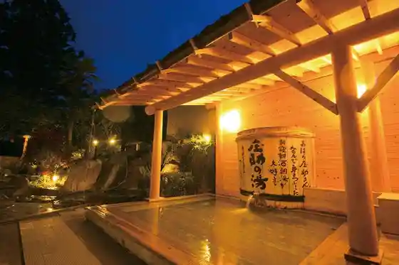
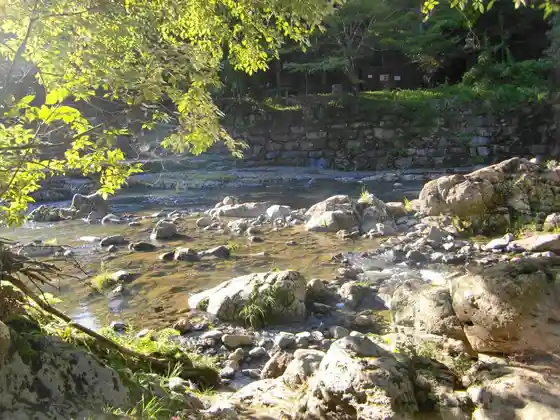

Inunaki Kawa River Park no Higan Hana
Miyawaka, Fukuoka · 0949-32-0773 · Official / source link
Yu no Zen Village
Miyawaka, Fukuoka · 0949-54-0123 · Official / source link

Sengoku Kyo
Miyawaka, Fukuoka · 0949-55-9090 · Official / source link

Miyawaka Oidashi Neko Honpo
Miyawaka, Fukuoka · 0949-52-3666 · Official / source link
Kiyomizudera (Seisuiji) no Unkai (Miyawaka)
Miyawaka, Fukuoka · 0949-32-0519 · Official / source link
Wakita Onsen
Miyawaka, Fukuoka · 0949-55-9090 · Official / source link
Yu Meguri no Yado Kusunoki Mizu Kaku
Miyawaka, Fukuoka · 0949-54-0123 · Official / source link
Wakamiya Hachiman Shrine (Miyawaka)
Miyawaka, Fukuoka · 0949-52-1337 · Official / source link
Amaterasu Shrine (Miyawaka)
Miyawaka, Fukuoka · 0949-32-0044 · Official / source link
Miyawaka Tora Baths
Miyawaka, Fukuoka · 0949-28-7435 · Official / source link
Takehara Burial Mound
Miyawaka, Fukuoka · 0949-32-3210 · Official / source link
Inunaki O Bekkan Ato
Miyawaka, Fukuoka · 0949-55-9090 · Official / source link
Doriimuhopu Wakamiya
Miyawaka, Fukuoka · 0949-54-0141 · Official / source link
Togen Sakai
Miyawaka, Fukuoka · 0949-54-0322 · Official / source link
Ikoi Village (Sengoku)
Miyawaka, Fukuoka · 0949-32-0519 · Official / source link
Neko Tsuka Park
Miyawaka, Fukuoka · 0949-32-0519 · Official / source link
Rokugagaku
Miyawaka, Fukuoka · 0949-32-0519 · Official / source link
Satsu Kaori Tei - Soukaitei
Miyawaka, Fukuoka · 0949-52-6795 · Official / source link